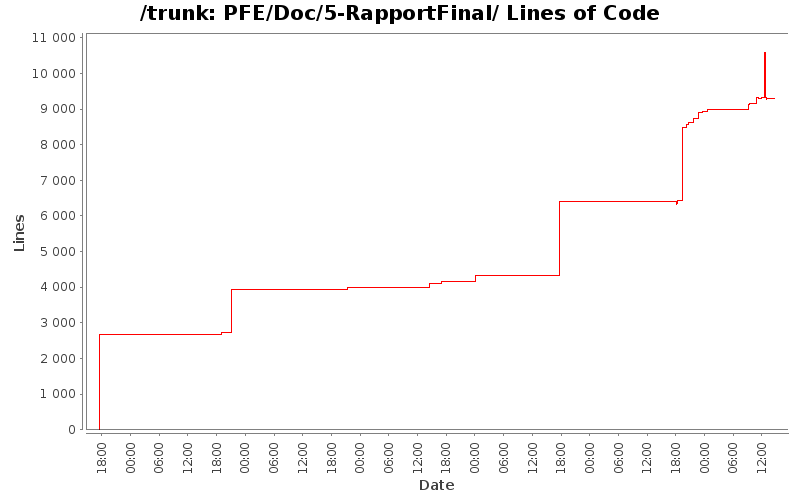

| Author | Changes | Lines of Code | Lines per Change |
|---|---|---|---|
| Totals | 108 (100.0%) | 29661 (100.0%) | 274.6 |
| fab0670312047 | 36 (33.3%) | 11800 (39.8%) | 327.7 |
| nakara.rahma | 32 (29.6%) | 8402 (28.3%) | 262.5 |
| hoc5783 | 32 (29.6%) | 4459 (15.0%) | 139.3 |
| mesbahi.jaafar@gmail.com | 6 (5.6%) | 2681 (9.0%) | 446.8 |
| Abdelali.nait | 2 (1.9%) | 2319 (7.8%) | 1159.5 |
+ Corrections à la dernière minute.
27 lines of code changed in 3 files:
+ Dernieres corrections
2076 lines of code changed in 1 file:
+ Ne soyons pas timide
1 lines of code changed in 1 file:
+ Relecture algo marcheur
2069 lines of code changed in 1 file:
+ correction
250 lines of code changed in 1 file:
+ Nouveau dossier dédié à la gestion de projet => Rapport à part.
1 lines of code changed in 2 files:
+ Ajout DiagrammeIDEEF0.png
-+ Intégration du diagramme dans la partie gestion de projet :)
45 lines of code changed in 1 file:
+ Séparation des rapports : final, gestion de projet et gestions des coûts.
0 lines of code changed in 1 file:
+ corrections
9 lines of code changed in 1 file:
+ correction
1263 lines of code changed in 1 file:
+ Mise en forme du rapport avec corrections.
1631 lines of code changed in 8 files:
+- Reclecture et modification du AlgoMarcheur.lyx (rapport Final)
n'hesitez à faire une relecture ... ;)
2069 lines of code changed in 1 file:
+ correction orthographe
6 lines of code changed in 1 file:
-+ Ajout partie Pb et solution apporté
38 lines of code changed in 1 file:
+ Correction d'un bug
1 lines of code changed in 1 file:
+ Pour être sûr que les figures soient dans les bon chapitres
27 lines of code changed in 2 files:
+ correction orthographe
425 lines of code changed in 1 file:
+ correction de la conslusion
19 lines of code changed in 1 file:
+ Ajout de la répartition des charges dans la partie Gestion des coûts
1256 lines of code changed in 1 file:
+ Relecture de la conclusion de management de projet
1091 lines of code changed in 1 file:
+ Relecture
+ Remise sous forme de chapitres (plus facile à lire et à naviguer dans
le document par la suite)
+ Ajout des sources bibliographique
3096 lines of code changed in 8 files:
+ une sorte de conclusion pour le rapport de gestion de projet
46 lines of code changed in 1 file:
+ confusion sur la conclusion excusez moi pour les commit :p
2 lines of code changed in 1 file:
+ état de l'art normalement finis pour ceux qui veulent jeter un coup d'oeil
85 lines of code changed in 8 files:
-+ Modification du Produit Back log
-+ Ajout des itérations
1038 lines of code changed in 1 file:
+ Ajout petite note
+ Ajout d'une partie que je suugère à chacun de lire dans la gestion de
projet
856 lines of code changed in 1 file:
+ etat de l'art pas encore corrigé
1675 lines of code changed in 9 files:
+ Intégration des fichiers ajouté par Rahma
+ Correction d'un chemin absolu en chemin relatif
60 lines of code changed in 1 file:
+ fichier composant l'état de l'art
2065 lines of code changed in 6 files:
+ Prise en compte des modif de chacuns
+ Correction orthographe et syntaxe
358 lines of code changed in 1 file:
-+ Ajout des Outils de travail
32 lines of code changed in 1 file:
-+ Partie Historique ST + quelque modif.
272 lines of code changed in 1 file:
+ Correction orthographe
8 lines of code changed in 1 file:
+ Ajout d'information sur rapport de cout
+ Correction d'adresse relative
+ Relecture
2 lines of code changed in 2 files:
- Supression et déplacement des doublons
+ Ajout conclusion rapport de Synthèse
+ Correction orthographique
2068 lines of code changed in 2 files:
+ je commit meme si ce n'est pas fini pour ne pas avoir de conflit plus tard
731 lines of code changed in 1 file:
+ Ajout conclusion
75 lines of code changed in 1 file:
+ Gestion des coûts pour le rapport de synthèse sera fini ce soir au plus tard.
+ EntrepiseST pour Jaafar.
+ Bilan Etat de l'Art : corrections et remettre la nature du document.
+ Suppression des fichiers non utilisés dans les dossiers des rapports.
120 lines of code changed in 5 files:
+ ajout d'une intro
+ Mise en forme des calculs
+ Mise en forme de la gestion des coûts
336 lines of code changed in 2 files:
+ Correction et mise des rapports envoyés
2 lines of code changed in 1 file:
(6 more)